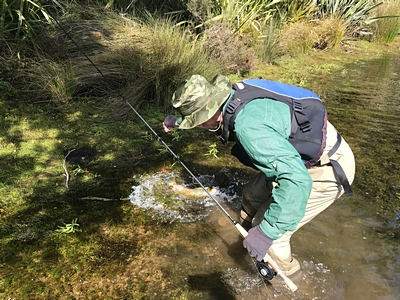
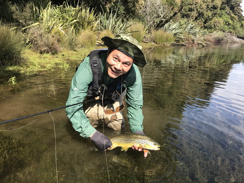
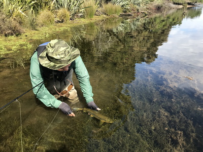
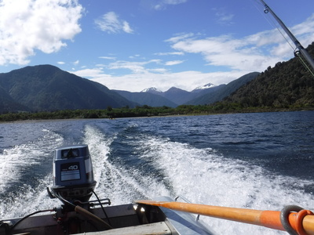
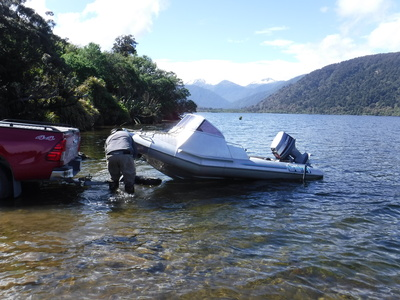
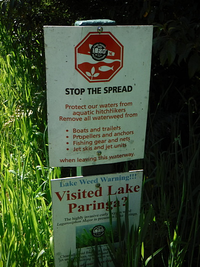
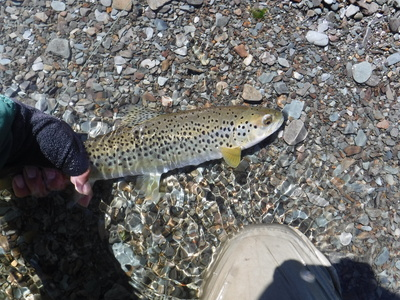
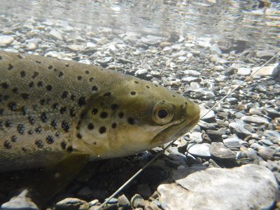

釣行日誌 ＮＺ編 「一期一会の旅：A Sentimental Journey」
何とか湖でも１尾
11/25(SUN)-2
さすがにディーンがこの湖１番のポイントと言うだけあってその一帯は魚影が濃かった。
「ゴウ、そのウーリーバガーはちょっと大きすぎるぞ。」
と言って、自分のフライボックスから、同じようなパターンだが、やや小ぶりな１本を取りだして結び替えてくれた。それを使い、ピッピッと引いてくると３尾目でようやくヒット！ さすがにディーン（ブリントさん製作かも？）のフライは良く効く。鱒は小型で浅場だったのでボートから降りて自分でハンドランディングした。



一帯を探った後に流れ込みへと移動してみると、岸辺に見覚えのある２人が立ち込んでいる。初日に河口部で出会ったネルソンのガイドさんとそのお客さんである。ガイドさんは Nick King という名前で、あれ以来このサウス・ウェストランドを釣り歩いていたらしい。再びディーンとニックさんの情報交換と世間話が始まり、僕はお客さんに挨拶して話しかけた。名前を教えてもらったのに忘れてしまったが、60代後半から70代前半あたりに見えるその紳士は、スイスから来たという元お医者さんで、長年外科医として勤めたが数年前にリタイヤしたそうだ。生まれはイングランドだがスイスに移住して医師になったそうで、いつもなら奥さんと一緒にニュージーランドに来るのだが、今年は自分だけで来たとのこと。今朝はもう流れ込み一帯で10尾くらい上げたよ。と言うので僕はいささか安心した。初日に会った時の残念そうな顔がとても気の毒に思えていたのだ。向こうの２人の話が長くなっていたのでそのお客さんは苦笑し、
「長い政治談義は勘弁だね。」
と言った。僕も笑いながら、
このお医者さんくらいの歳になってもあれだけ川歩きが出来るのだから、これからも体を丈夫に健脚を保ってぜひとも、あのシーラン・ブラウントラウトをこの手に掴みたいものだと思った。財力はとても及ばないにしても。（笑）
２人の長話も終わり、ディーンがボートを出す時に、ニックさんが舳先を押して手助けしてくれた。彼は帽子からジャケットからウエーダーまで迷彩色で固めており、戦争映画に出てくる特殊部隊のようだった。流れ込みに別の釣り人のものらしい２人乗りカヤックが着けてあったので、この湖はなかなかの人気スポットらしかった。日曜日だったせいもあるかも知れないが。

ボートを飛ばしてランプへ戻り、またディーンが器用なハンドルさばきでトレーラーを水中へと動かし、ボートを載せる。

このアルミボートはおそらく90年代後半からブリントさんが使っているらしく、かなり長く使えるものだなぁと感心した。99年のクリスマスにブリントさんとサウス・ウェストランドの湖を釣り歩いた時もこのボートだったのだ。
ボートランプの脇に、有害な藻類の拡散を防ぐために、湖の利用者にボートやトレーラー、釣り道具などから藻を取り除いてから移動することを促す立て看板があった。

再び国道から林道に入り空き地に車とトレーラーを停め、川へと歩いて行く。時刻は11時半。もうすぐあの淵でまた鱒たちのボイルが始まるだろう。今日はディーンは三脚とビデオカメラを担いでいくので大仕事である。
10分ほど遡行すると良いポイントがあったので、白いストリーマーを引くと30cm級の可愛いブラウンが釣れた。


釣行日誌ＮＺ編 目次へ
サイトマップ
ホームへ
お問い合わせ